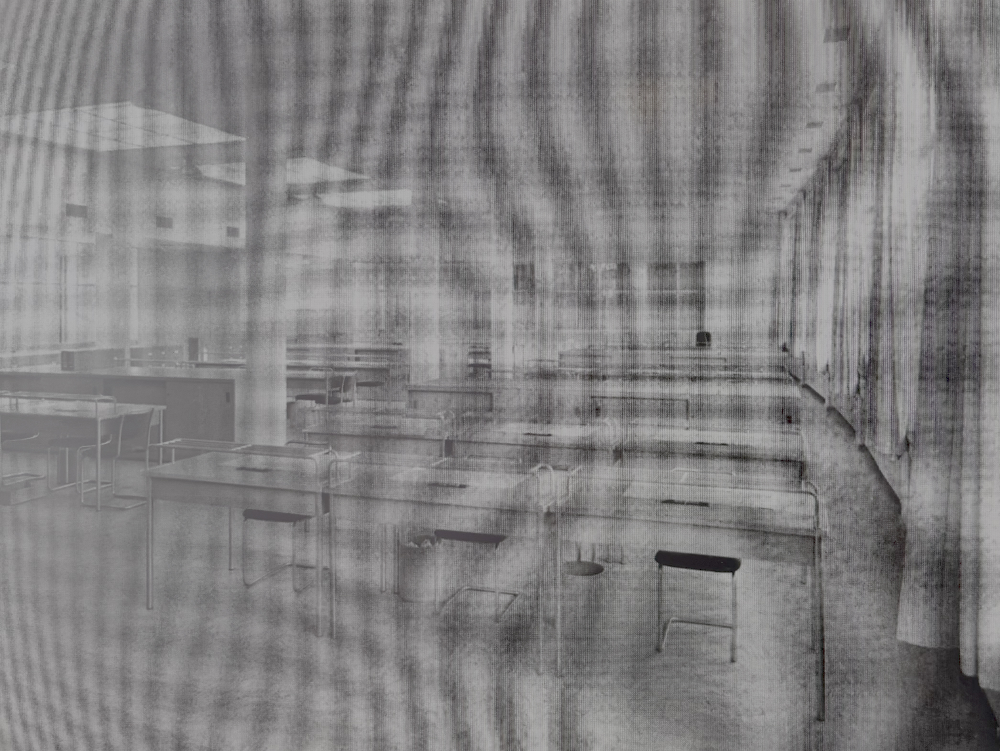
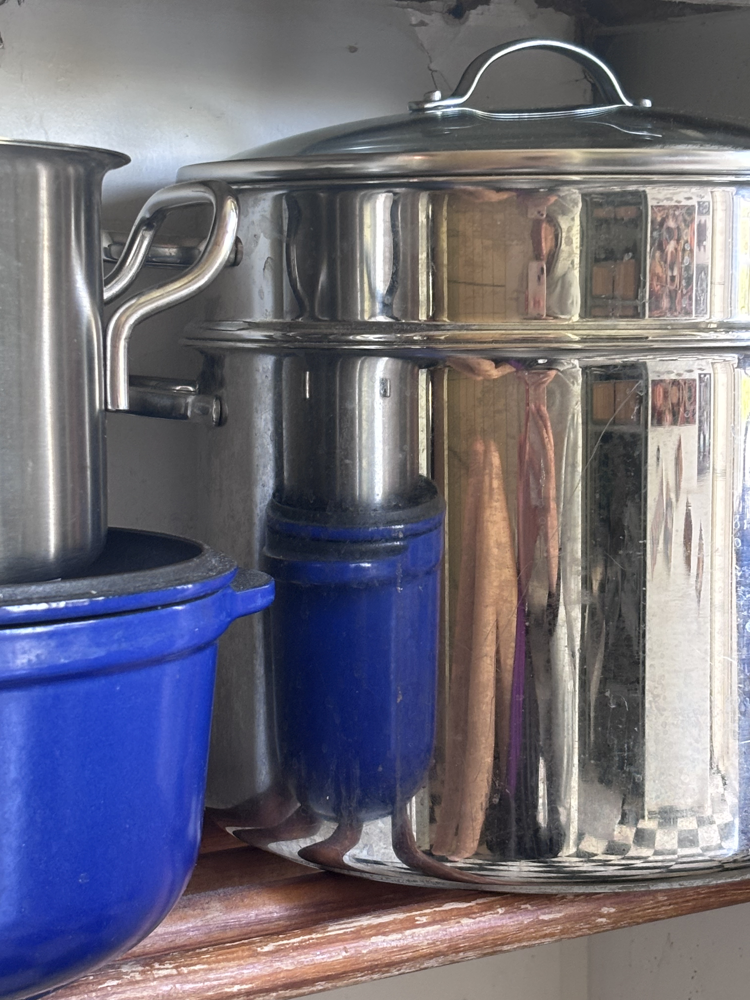
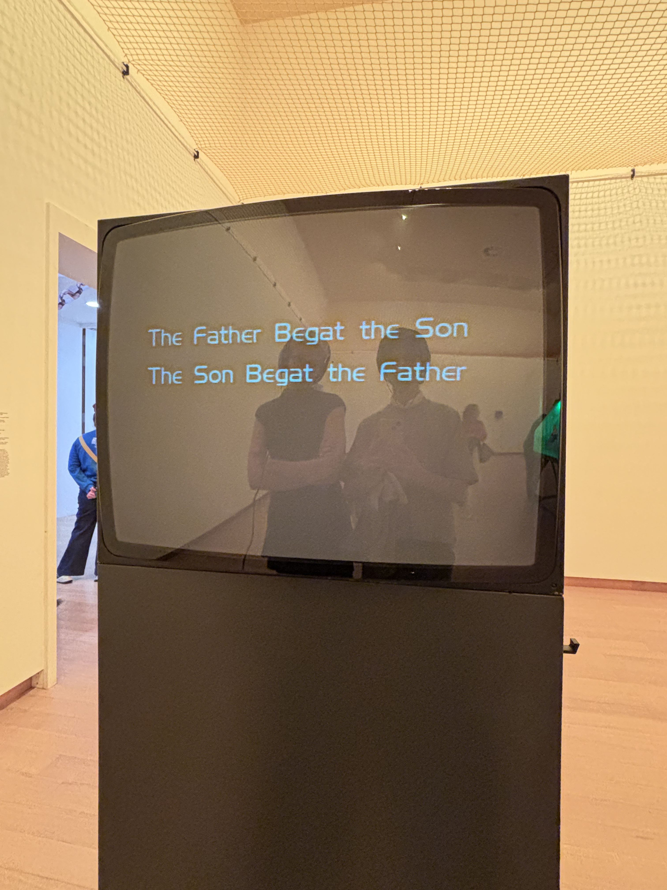
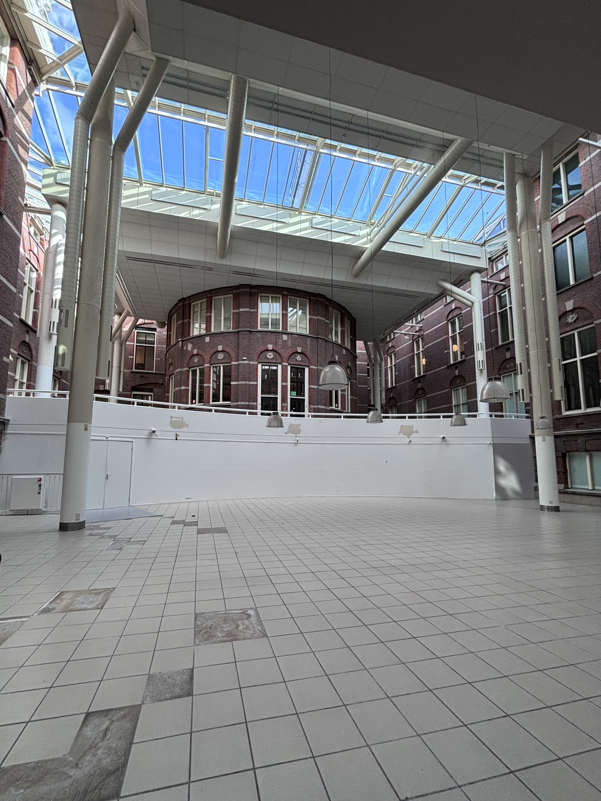
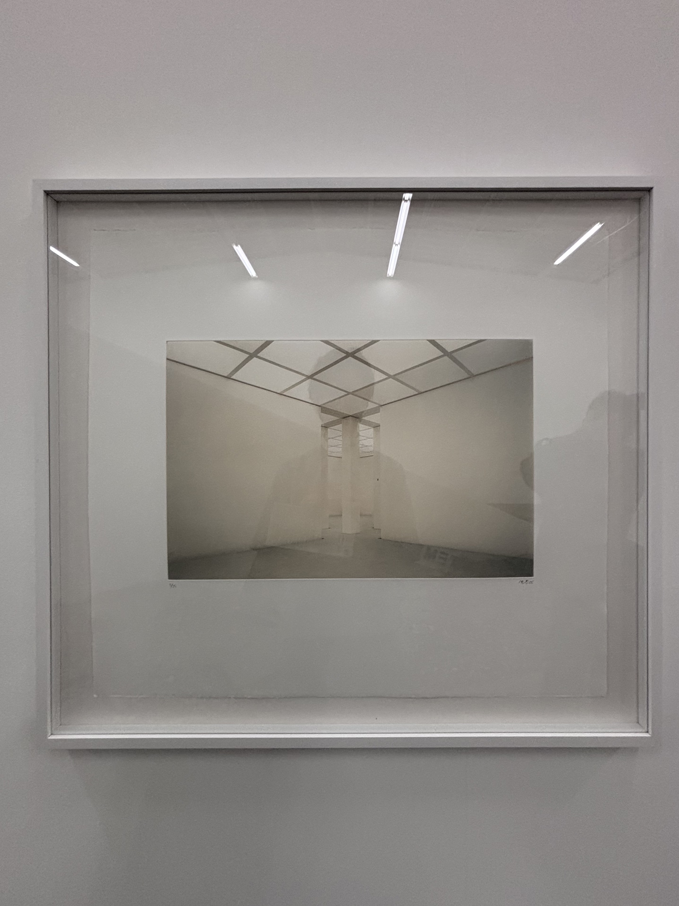
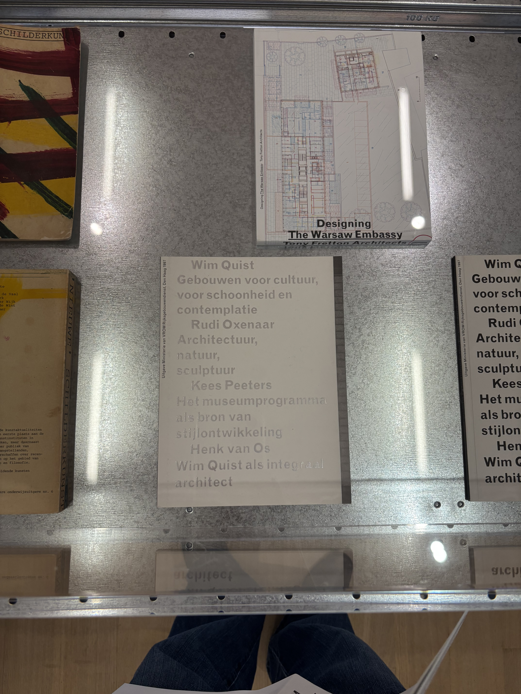
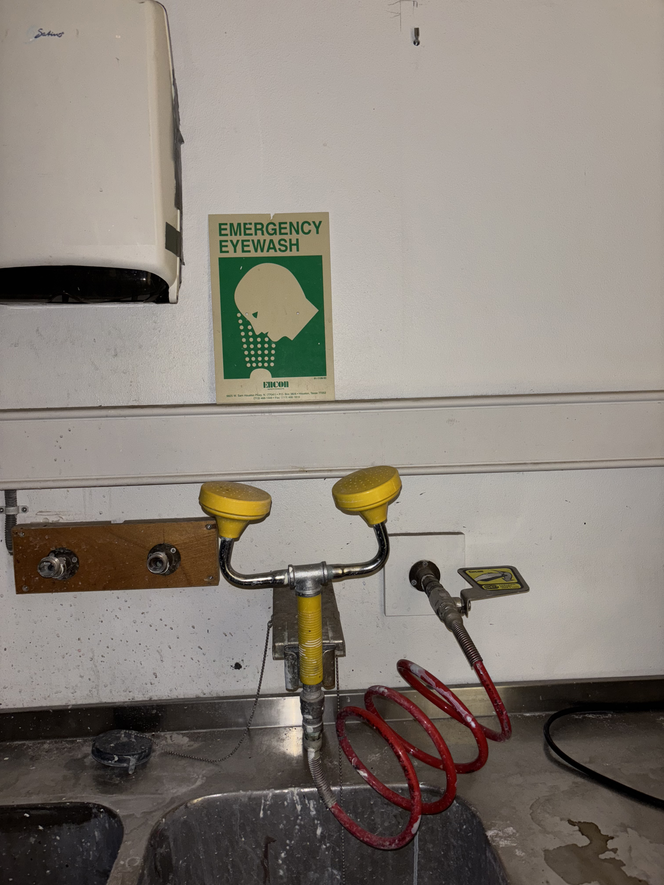

Tijmen ter Keurs is an art and architectural historian working as a writer, researcher, curator and
critic.
His
primary interest encompasses the intersection of architectural space and visual arts. Currently, he is
an
editor
for Simulacrum Magazine, writes regularly as a critic for De Witte Raaf, and conducts
research on
post-war
office buildings for the Dutch Cultural Heritage Agency.
He graduated from the University of Amsterdam (MA Art History, cum laude in 2025), where he completed
his
thesis
on the history of the concept fetishism as a reflection on museum architecture since 1930. Prior, he
completed
his BA Art History (University of Amsterdam, 2022), and was a visiting student at both TU Delft and the
University of Technology Sydney.
Previously, he worked at Stedelijk Museum Amsterdam as curatorial assistant (2024) and floormanager
Public
Programme (2021–2023). During this time, he worked on performances by Nora Turato (2021) and Alexis
Blake
(2021), The Don Quixote Sculpture Hall (2024), and exhibitions by stanley brouwn (2024), Ana Lupas
(2024),
and
Anselm Kiefer (2025).
Besides his work in the arts, Tijmen holds a position at the University of Amsterdam, where he works as
Community Manager for the Humanities Venture Lab, fostering an entrepreneurial spirit amongst
researchers
and
students in the Faculty of Humanities and connecting them with external partners to boost social
impact.
Based in Amsterdam
tijmenterkeurs@proton.me
@tijmentk(instagram)